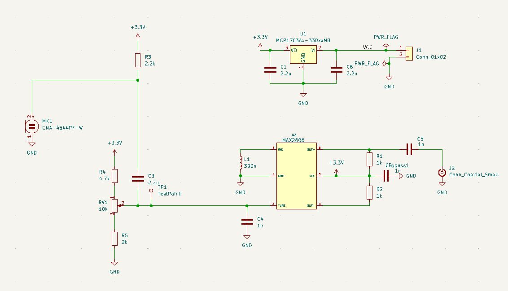
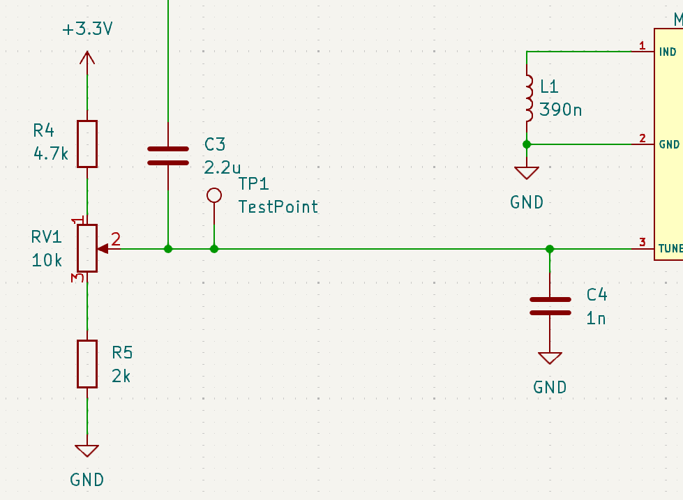
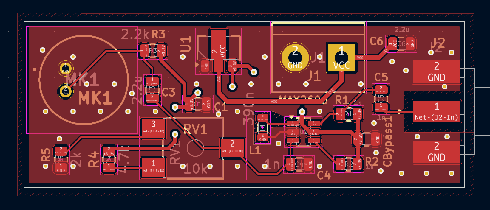
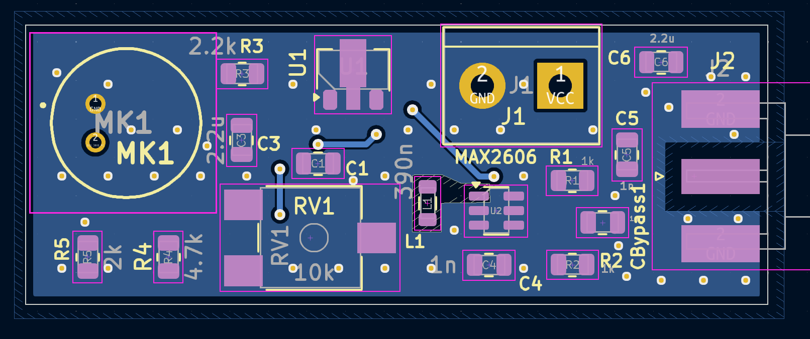
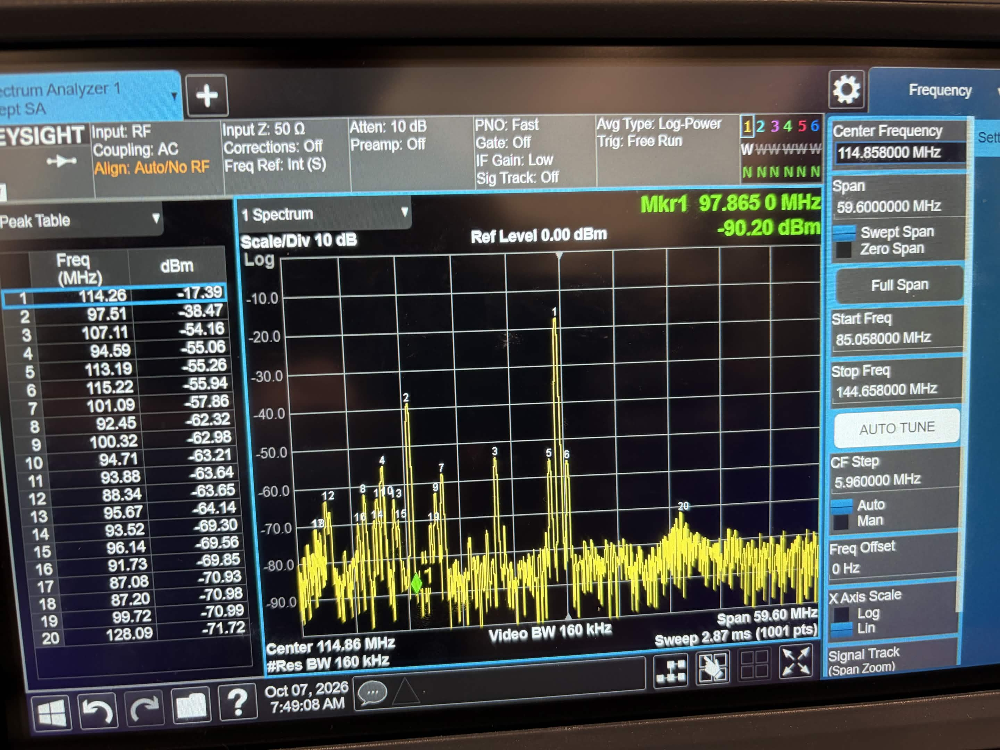
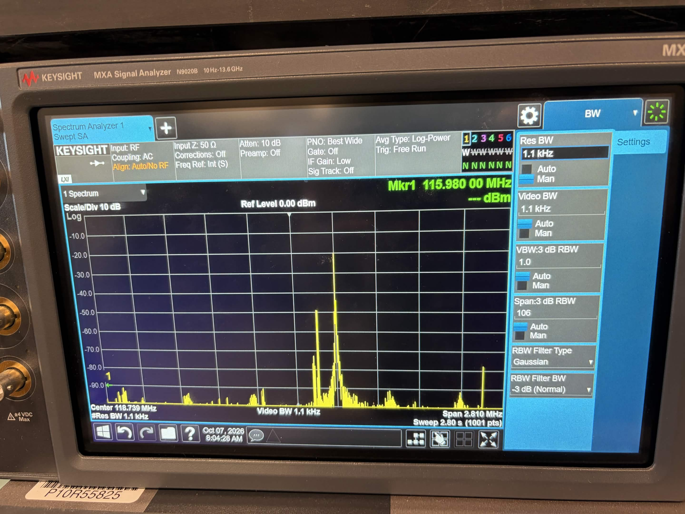

FM Voice Transmitter
MAX2606 VCO | RF PCB Design | Frequency Modulation
I designed a two-layer FM transmitter PCB around the MAX2606 voltage-controlled oscillator (VCO). The circuit uses an adjustable DC tuning voltage to establish the carrier frequency and an electret microphone to modulate that carrier with voice. The design includes a regulated 3.3V supply, an SMA output for RF testing, and a PCB layout developed with particular attention to the oscillator's sensitivity to parasitic capacitance.

pcb-3d.pngProject Sections
1. System Architecture
The transmitter was divided into functional blocks so that the carrier generation, tuning, modulation, and output could be designed and evaluated separately. The MAX2606 generates the carrier, while the TUNE pin receives a DC bias that selects the center frequency and an AC audio signal that varies its instantaneous frequency.
Two additional inputs feed the oscillator's TUNE node: an adjustable resistive divider sets the DC tuning voltage, and the microphone supplies the audio signal through a coupling capacitor. This arrangement implements direct frequency modulation without requiring a separate RF mixer.

schematic.png2. VCO and Inductor Selection
I selected the Analog Devices MAX2606 because it integrates a voltage-controlled oscillator with an internal varactor and supports operation in the frequency range needed for an FM broadcast-band project. This reduced the number of external parts needed to build a tunable RF oscillator.
The approximate resonant frequency follows the familiar LC relationship, although the actual capacitance includes the internal varactor and PCB parasitics:
Using the MAX2606 datasheet's inductance-versus-frequency curve, I selected a nominal 390nH inductor to place the carrier near the 100MHz region. I chose the Coilcraft 0805HP-391XGRC rather than selecting an inductor based on inductance alone. At RF frequencies, the inductor's quality factor (Q) and self-resonant frequency are also important.
| Inductor parameter | Selected part | Design significance |
|---|---|---|
| Inductance | 390nH ±2% | Establishes approximate center frequency |
| Q at 100MHz | 52 typical | Reduces resonant-tank losses |
| Self-resonant frequency | 700MHz typical | Well above intended carrier frequency |
| Package | 0805 SMD | Compact RF layout |
The MAX2606 recommends an external inductor Q of at least 35. The selected part's typical Q of 52 at 100MHz made it a promising choice, while its high typical self-resonant frequency helped ensure it behaved inductively near the operating band. I also checked the manufacturer's recommended land pattern rather than assuming every 0805 inductor uses identical pads.
3. Designing the TUNE Voltage Divider
A central design task was determining how to generate the voltage applied to the MAX2606's TUNE pin. The TUNE voltage changes the capacitance of the oscillator's internal varactor: increasing the tuning voltage generally decreases capacitance and increases carrier frequency.
The datasheet characterizes the device over a 0.4–2.4V TUNE range. A potentiometer directly connected between 3.3V and ground would sweep from 0–3.3V, exceeding that characterized range. Instead, I used a 10kΩ potentiometer with fixed resistors above and below it to constrain the wiper voltage.
Deriving the Resistor Values
I first set the target limits to 0.4V and 2.4V, and selected a 10kΩ potentiometer. The full 10kΩ track should drop the difference between the two target voltages, or 2.0V. Assuming negligible DC current into TUNE:
The lower fixed resistor must drop 0.4V at that current, and the upper fixed resistor must drop the remaining 0.9V from the 3.3V supply:
Rtop = (3.3V − 2.4V) / 0.200mA = 4.5kΩ
I selected a standard 4.7kΩ upper resistor instead of the calculated 4.5kΩ. The final series network is therefore 4.7kΩ + 10kΩ + 2kΩ, for a total resistance of 16.7kΩ.
| Element | Selected value |
|---|---|
| Upper resistor | 4.7kΩ |
| Potentiometer | 10kΩ |
| Lower resistor | 2.0kΩ |
| Supply voltage | 3.3V |
Checking the Resulting Voltage Range
At the lowest wiper position, only the 2kΩ resistor is below the wiper. At the highest position, the full 10kΩ potentiometer and the 2kΩ resistor are below it:
Vmax = 3.3 × (12 / 16.7) = 2.371V
Vmid = 3.3 × (7 / 16.7) = 1.383V
The divider current is approximately 3.3V / 16.7kΩ = 198µA. This arrangement gives nearly the full characterized tuning-voltage range while preventing the potentiometer from applying the entire supply voltage to TUNE. These are ideal divider calculations; resistor tolerances and TUNE loading can change the exact endpoints slightly.

tuning-network.pngRelating the Tuning Voltage to Carrier Frequency
I used the MAX2606 datasheet's frequency-tuning specifications to establish an initial expectation for the oscillator. For an assumed nominal frequency of 102MHz, the specified relative limits of −4.4% and +3.4% at 25°C correspond to:
fhigh = 102MHz × (1 + 0.034) ≈ 105.5MHz
These figures are an initial datasheet-based estimate, not an exact frequency prediction for a specific PCB. The frequency depends on the effective tank capacitance, inductance tolerance, temperature, and RF loading; the design's actual frequency range must be established through measurements.
4. Microphone Input and Frequency Modulation
An electret microphone converts voice into a small time-varying electrical signal. I biased the microphone from the 3.3V supply through a 2.2kΩ resistor and connected its output to the tuning network through a 2.2µF coupling capacitor.
The coupling capacitor blocks the microphone's DC operating voltage from disturbing the DC carrier-frequency setting, while allowing the audio waveform to be superimposed onto the TUNE pin's bias:
Over a small portion of the VCO tuning curve, the instantaneous frequency can be approximated as:
A larger audio signal produces greater frequency deviation. The modulation signal should therefore remain sufficiently small to avoid excessive deviation and distortion. The microphone bias, DC tuning voltage, and RF bypassing each serve separate purposes despite sharing the TUNE node.
Why the TUNE Bypass Capacitor Matters
I placed a 1nF C0G/NP0 capacitor between TUNE and ground, close to the MAX2606. The oscillator requires a low-impedance RF path at this node, but the lower- frequency audio waveform must still be able to affect its tuning voltage. An ideal 1nF capacitor has a reactance of approximately 159kΩ at 1kHz, compared with approximately 1.59Ω at 100MHz. Actual RF behavior also depends on the capacitor's parasitics and mounting geometry.
5. Power Regulation and RF Output
3.3V Regulated Supply
I used a Microchip MCP1703 3.3V low-dropout regulator to supply the oscillator. Because a VCO converts voltage changes into frequency changes, supply stability matters for frequency stability. The regulator circuit includes 2.2µF input and output capacitors, with additional high-frequency bypassing near the MAX2606's VCC pin to limit the effect of RF supply currents.
Differential Outputs and SMA Test Connection
The MAX2606 provides complementary open-collector RF outputs. I used 1kΩ pull-up resistors to establish their DC operating conditions and routed OUT+ through a 1nF DC-blocking capacitor to an edge-mounted SMA connector. This connector provides a convenient interface to a 50Ω spectrum analyzer.
Although the SMA connector provides a convenient RF test connection, the MAX2606 output is not inherently matched to the spectrum analyzer's 50Ω input. The output coupling network and load impedance influence the RF power delivered to the instrument, so I did not assume maximum power transfer from the oscillator.
6. RF PCB Layout
I laid out the circuit on a two-layer PCB with ground pours on both copper layers. Ground-stitching vias connect the planes and provide short return paths near components and along the RF output. The via grid used approximately 3mm spacing with 0.6mm via diameters and 0.3mm drills.
The resonant tank required special attention. Copper near the tank inductor creates parasitic capacitance, which changes the effective LC resonance and may shift the carrier frequency. I therefore used localized ground-plane keepouts near the VCO resonant tank, while preserving the required ground connections to the MAX2606 and bypass components.
I also incorporated a localized ground-plane clearance at the SMA signal-pad transition to reduce excess shunt capacitance. Ground copper and vias remain near the connector's ground terminals to support the RF return path. These targeted clearances were limited to sensitive areas to balance parasitic capacitance against ground-return continuity.

pcb-top.png
pcb-bottom.pngLayout tradeoff: Ground planes generally improve RF return continuity, but ground copper in the wrong place can add capacitance to the oscillator tank or SMA launch. The objective was to maintain a low-impedance return network while controlling parasitic coupling in the most sensitive areas.
7. Prototype Testing and Results
I characterized the transmitter with a spectrum analyzer connected to the SMA output. By changing the tuning potentiometer, I observed the carrier shift in frequency. The reported tuning range was approximately 97.5–105.5MHz, with RF output power around −18 to −16dBm near a 102MHz carrier.
The measured power may have been limited in part by an impedance mismatch between the MAX2606 output stage and the analyzer's 50Ω input. Such a mismatch can cause some available RF power to be reflected rather than delivered to the load. Losses in the coupling network and test connections may also contribute. Without an output impedance measurement or a before-and-after matching test, impedance mismatch remains a possible explanation rather than a confirmed cause of the measured power level.
With the microphone active, the spectrum changed in response to voice input. These spectral changes were consistent with frequency modulation of the RF carrier. A controlled single-tone audio measurement would be a useful next step for quantifying peak frequency deviation and modulation index.

spectrum-carrier.png
spectrum-voice.pngRF power values refer to the measurement point and setup used for characterization; the radiated power of an antenna-connected system is a separate quantity.
8. Design Tradeoffs and Next Steps
This project reinforced how oscillator design, low-frequency bias circuitry, component parasitics, and PCB geometry all affect the measured RF output. Direct VCO modulation made the circuit compact, but without a phase-locked loop, carrier frequency remains sensitive to supply disturbances, temperature, and component tolerances.
Potential improvements include measuring the full frequency-versus-voltage tuning curve, calibrating frequency deviation with a known audio tone, characterizing harmonics and phase noise, and evaluating a dedicated output-matching and low-pass filtering network. An audio gain/limiting stage could also provide better control of modulation depth.
This transmitter was developed as an RF design and measurement project. Any on-air operation in the FM broadcast band must meet applicable radio regulations and emission limits.